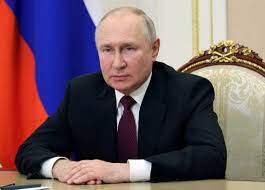

7 maj 2018
Komentare 2
Nogle EU lande frygter, at Rusland kan bruge Nord Stearm 2 som politisk våben mod Europa. Men i virkeligheden er det omvendt, menner firmagerne bag firmagerne bag røglednigen: Det EU som bruger gasen som våben overfor Putin. Information har været på charmetur med den rusiske Gas' Europæiske vanner.
7 maj 2018
Komentare 2
Jeg tænke lige at tale om varme sammen. Før vi begynder på interveiwet siger Jens Muller, talsperson for det rusiske gas firma Nord Stearm 2 AG. Vi sider i en gruppe jounalister i en bus på vej til en gasterminal i Rotterdam, inviteret af folket bag den kommende rusiske gasrørledining, Nord Stearm 2 (NS2) der efter planen skal krydse dansk farvand.